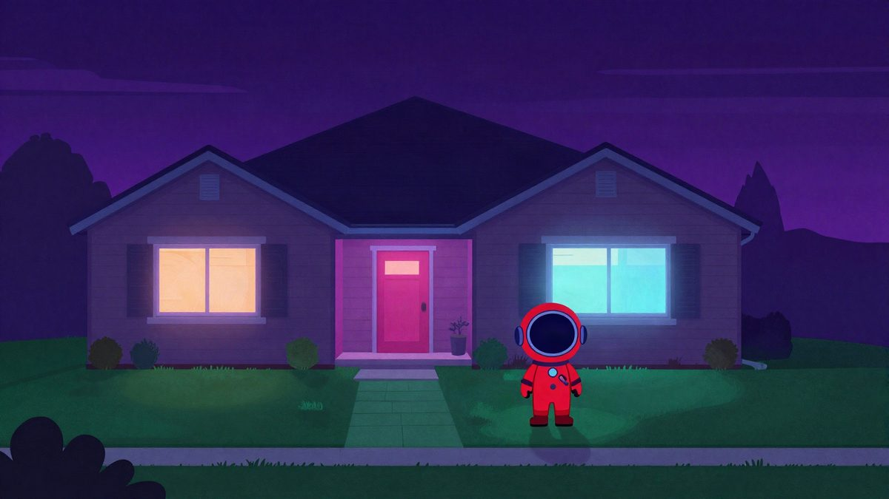

Igrač Among Usa i njegova majka pomogli su FBI-ju pronaći 17-godišnjakinju koja je nestala prije više od godinu dana

Šesnaestogodišnji Landon Tresp upoznao je u igri Among Us djevojku koja je navodno bila držana protiv svoje volje. On i njegova majka Khristina pronašli su lokaciju i predali podatke FBI-ju, a djevojka je spašena.
Sedamnaestogodišnja djevojka koja je nestala prije više od godinu dana vraćena je kući nakon što su je pronašli FBI te mladić kojeg je upoznala kroz igru Among Us i njegova majka. Šesnaestogodišnji Landon Tresp i njegova majka Khristina doznali su gdje se djevojka nalazi i proslijedili podatke policiji, rekli su za BBC.
Landon je za BBC rekao da su se s djevojkom, čiji identitet nije objavljen, "jednostavno poklopili" dok su razgovarali tijekom igre. Nastavili su razgovarati na Discordu. Djevojka mu je rekla da je pobjegla od kuće i da je više od godinu dana držana protiv svoje volje. Landon je o tome ispričao majci.
Kako su našli lokaciju
Khristina je isprva bila sumnjičava. Razgovarala je s djevojkom na Discordu, pročitala izvješća o njezinu nestanku i zatražila poštu ili dokument s punim imenom, što je djevojka poslala. Zatim je u poreznim i vlasničkim evidencijama tražila relevantne adrese, a za njih je na stranicama za nekretnine pronašla fotografije. Djevojka je na Discordu među njima prepoznala kuću u kojoj je držana.
Khristina se potom javila djevojčinoj majci na društvenoj mreži i kratko je nazvala. Nazvao ju je i FBI te pitao može li potvrditi da je djevojka živa. Khristina je odgovorila da je s njom razgovarala videopozivom i da ju je vidjela.
Što je djevojka ispričala
Sljedećeg jutra, nakon što je osumnjičeni 39-godišnji Adam Hunter Harmel otišao iz kuće, djevojka se javila Khristini. FBI je pratio taj razgovor. Djevojka je rekla da je Harmela upoznala preko društvene mreže, gdje se predstavljao kao osoba s invaliditetom i ponudio joj novac da mu pomogne otputovati iz Utaha u Oregon. Kad ju je pokupio, navodno je bacio njezin telefon u rijeku i odvezao je u Oregon.
Rekla je da je bila držana u njegovu podrumu i da je morala spavati uza zid u njegovu krevetu, a on je ispod jastuka držao nož da ne bi pobjegla. Dao joj je mobitel s kojeg nije mogla zvati, ali koji se mogao spajati na wifi, pa je mogla igrati online i potražiti pomoć.
Policija je tijekom Harmelove odsutnosti nadzirala ulicu i kuću. Kad je došao trenutak, Khristina je djevojci rekla da je vrijeme za bijeg. Djevojka je sigurno izašla iz kuće i predana je državnim policajcima. Harmel je uhićen i optužen za prijevoz osobe s namjerom sudjelovanja u kaznenim spolnim radnjama.
Službene objave
Objava FBI-jeva ureda u Salt Lake Cityju potvrdila je ishod, ali ne spominje ulogu Landona i Khristine. U njoj stoji samo da FBI i šerifov ured okruga Rich istražuju slučaj više od godinu dana. U priopćenju američkog Ministarstva pravosuđa stoji da je FBI 1. studenoga primio dojavu o mogućoj lokaciji djevojke te da je ona Harmela upoznala na društvenoj mreži u svibnju 2025.
Tresp i njegova majka svakodnevno su u kontaktu s djevojkom i pokušavaju dogovoriti susret uživo. "Ponekad samo sjedimo na videopozivu da zna da joj je netko tu", rekla je Khristina. Dodala je da djevojka, s obzirom na to što je proživjela, dobro funkcionira.
Izvor: PC Gamer